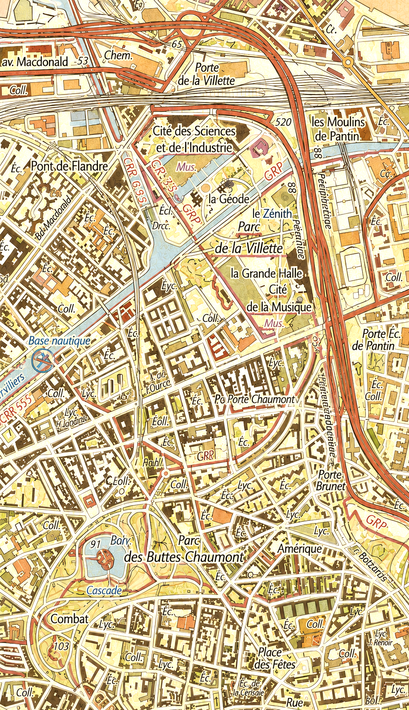
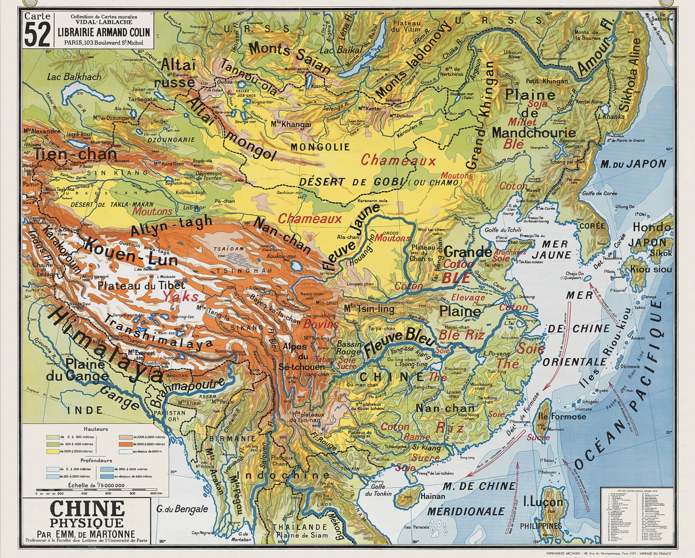

15H30
Mariage civil
Mairie du XIXe
Place Armand Carrel
18 septembre 2026 · Paris
Avec nos parents Serena, Laurence, Jean-Luc et Alain, nous avons le plaisir de vous inviter à notre mariage.
Répondre à l’invitationLa journée
15H30
Mairie du XIXe
Place Armand Carrel
16H30
Ventrus
Parc de la Villette
19H30
L’Envol
Philharmonie de Paris

Paris XIXe
Nous irons à pieds de la mairie au parc de la Villette, le lieu de l'apéritif (Ventrus) est ensuite juste à côté du lieu de la cérémonie.
Cagnotte de voyage
Après le mariage, nous partirons découvrir la Chine pour notre voyage de noces.
Si vous souhaitez contribuer à ce voyage, vous pouvez nous faire un
Wero à l'un de nos deux numéros :
07 85 58 07 07
06 46 49 59 51
ou effectuer un virement sur notre compte commun :
IBAN
FR76 1807 9753 1904 1966 2004 040
